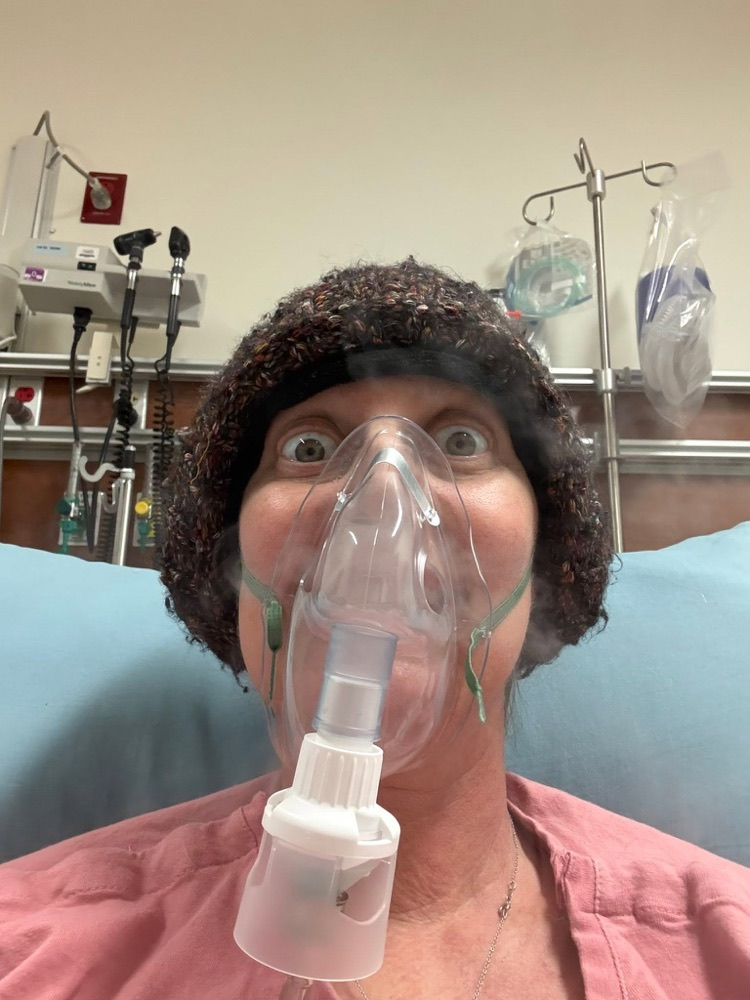

The two-point-four
Some numbers you don't forget.
January 2025
After weeks of unexplained illness, Danell's hemoglobin was found to be 2.4 — one of the lowest levels ever recorded at UK Hospital. She was diagnosed with acute myeloid leukemia (AML).
Chemo & the search
Five weeks of inpatient induction chemo brought remission. Months of maintenance treatment followed while doctors searched for a stem cell donor — including one match that fell through at the last minute.
August 2025 — Transplant
A second donor turned out to be a rare 12-out-of-12 match. Danell spent nearly four months in the hospital and came through the critical 100-day window with minimal complications.
Right now
Danell is in remission, living with rheumatoid arthritis from the chemo, and racing the clock to live fully in the time she's been given — while helping others just starting this same fight.


Remission is not the same as being cured. Danell's leukemia carries higher-risk mutations, and with AML, most relapses after transplant happen within the first two years. That's the honest math her family lives with: this isn't a victory lap, it's real, uncertain time — and they've chosen not to wait around and hope for more of it.
Even on hard pain days, Danell shows up publicly and honestly — documenting her treatment on TikTok, and in doing so, connecting with a community of fellow transplant patients. Many are just beginning the road she's already walked. She tells them what's coming. What helped her. What she wishes someone had told her.
So the family is front-loading everything they can, now. If the remission lasts longer than expected, no one will regret having lived fully in the meantime — and they'll be the first to stop asking for help. But most of what they do together right now is likely the only time, or the last time, Danell gets to live it. That's why the timing on the things below actually matters.